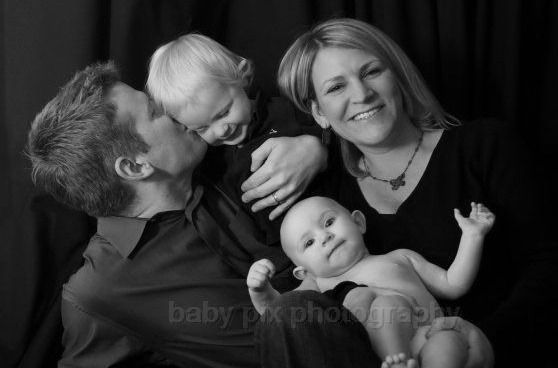
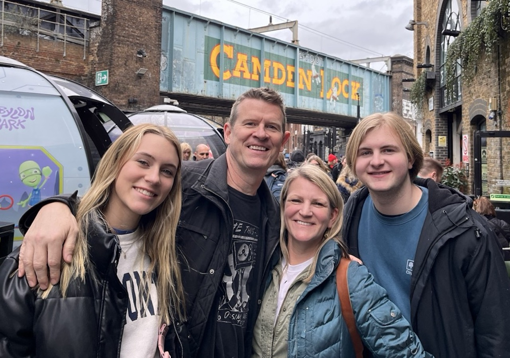

Welcome to Two Boobs and a Baby!
Launched in October 2005, Two Boobs and a Baby was among the first parenting podcasts, co-starring Heather and Dave Delaney.
2BB followed the trials and tribulations of two “boobs” as they became parents one step/blunder at a time.
The show was mentioned in USA Today and the Toronto Globe and Mail in 2006, picked as a Yahoo! Podcasts Staff Pick, and featured in The Jackson Sun (PDF) in 2007.
We made plenty of good friends along the way. We thank everyone for listening and watching.
— Heather & Dave
Two Boobs and a Baby+ podcast archive (2005–2008)
Loading…
Play
Ep.
Year
Title
Time
Loading episodes from the vault…
Where are they now?


The babies are now young adults in college. The boobs are now middle-aged, Heather is a teacher, and Dave is podcasting again. Nobody is getting a full night's sleep — just for different reasons.